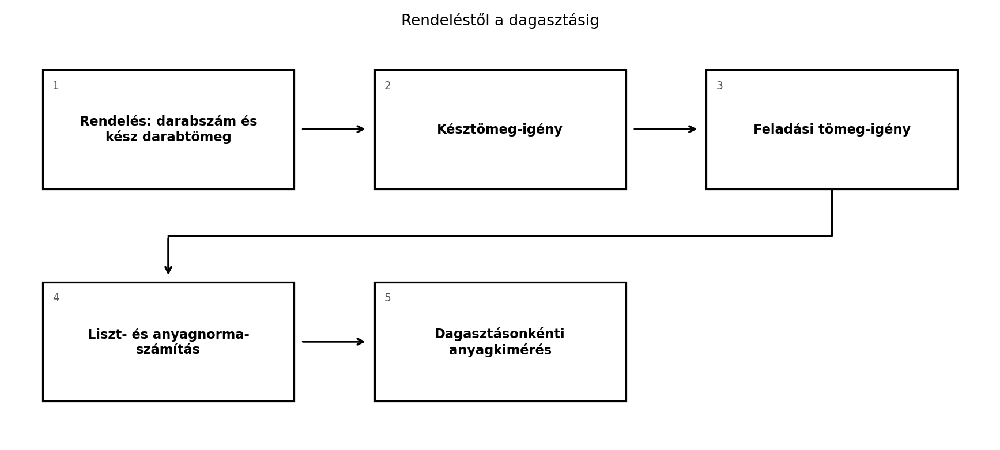

Egy pékségben a munka ritkán kezdődik azzal, hogy „gyúrjunk be valamennyi kenyeret”. Az értékesítés, a bolti rendelés vagy a megrendelői lista határozza meg, hogy másnap reggel hány darab és milyen termék kerüljön ki a kemencéből. Ha a pék ezt rosszul számítja, két kellemetlen eset várható: elfogy a termék és a vevő üres polccal találkozik, vagy a nap végén nagy mennyiségű el nem adott, megöregedett pékárut kell veszteségként leírni.
Az anyagnorma-számítás ezt a kérdést oldja meg: a rendelési darabszámból kiindulva, lépésről lépésre meghatározza, hogy mennyi lisztre, vízre, élesztőre, sóra és egyéb nyersanyagra van szükség, és azt hogyan osszuk el az egyes dagasztásokra. Ez nem egyszerűen „receptolvasás”, hanem a napi termelés tervezésének alapja.
Továbbvitt eredmény. Az itt bemutatott anyagnorma-fogalmat és számítási sorrendet használjuk a fehértermékek anyagnormáinál, a termékcsoportok gyártásánál, a kapacitás- és önköltségszámításnál. Aki ezt a fejezetet biztosan tudja, később a nagyüzemi tételszámítást is követni tudja.
Egy kis pékség reggeli tervező tábláján a következő áll:
Rendelés: 120 db 0,5 kg kész tömegű kenyér, összesen 60 kg késztermék.
A dagasztócsésze hasznos kapacitása: 60 kg tészta.
A normából számított lisztre vetített receptúra: liszt 100, víz 62, élesztő 2, só 1,8, tészta anyagnorma 165,8.
Várható erjedési, sütési és hűlési veszteség: 12,0%.
A pék nem a 60 kg lisztet, hanem annál kevesebbet vesz ki a lisztraktárból, mert a liszt 100%-a a tészta és termék sok más anyagához viszonyítva csak egy rész. A számítás folyamata oda-vissza mutat, ezért lépésről lépésre, visszafelé számolunk:

A folyamatban látható, hogy először a késztermékből tésztát, abból lisztet, abból pedig minden nyersanyagot visszafelé számítunk. A kovásznál a már kovászban felhasznált liszt és víz a dagasztáskor levonandó, ezt külön is megmutatjuk.
Definíció. Az anyagnorma (más néven receptúra, kalkulációs vagy technológiai anyagnorma) az adott termék gyártásához szükséges nyersanyagok mennyiségének előírásos összefoglalója. Az anyagnorma 100 tömegrész lisztre vetítve adja meg az egyes anyagok tömegrészeit, ahol a liszt = 100%.
Például:
Ez azt jelenti, hogy 100 kg liszthez 62 kg vizet, 2 kg élesztőt és 1,8 kg sót adunk.
Szabály. Az anyagnorma mögött mindig a lisztre vetített százalék áll. Ezt a lisztre vetített értéket -vel jelöljük:
ahol:
A liszt önmagára vetítve mindig 100%.
Definíció. A tészta anyagnormája (a lisztre vetített százalékok összege, a liszt 100-os értékével együtt) számértékre megegyezik a tésztahozammal: ennyi kg tészta készül 100 kg lisztből (lásd Tésztahozam, termékhozam, kihozatal és veszteségek). Számítása:
Ha minden anyag mennyiségét 100 kg liszthez adjuk, az így kapott tésztatömeg:
Összefüggés. A tésztakitermelés (TA) a víz lisztre vetített százalékának gyors kifejezése, ha csak a lisztről és a vízről beszélünk:
Az anyagnorma ennél több: minden anyagot tartalmaz, ezért a tészta anyagnormája a teljes tésztatömegre vonatkozó lisztre vetített összeg.
Szabály. A rendelésből való anyagszükséglet — a lépések sorrendje:
Az anyagnorma-számításhoz előbb tisztáznunk kell, hogy a sütés során a termék tömeget veszít. Ezt a veszteséget a Tésztahozam, termékhozam, kihozatal és veszteségek alfejezetben részletesen tárgyaljuk, itt csak a számításhoz szükséges alapösszefüggést használjuk.
Összefüggés. Ha a sütési és hűlési (és adott esetben erjedési) veszteség együttes százaléka a feladási tömegre vetítve (%), akkor:
ahol:
Visszafelé:
A számításban a értéke tanulási példa — az üzemi HACCP-tervben, technológiai lapon vagy a pékmester adatlapján kell ellenőrizni: (ellenőrizendő: a pékség HACCP-terve, üzemi technológiai lap, gyártói adatlap).
Figyelem. A veszteség százalékát mindig ahhoz az alaphoz kell kötni, amelyre vonatkozik. A feladási tömegre vetített veszteség a leggyakoribb, de előfordulhat, hogy a késztermékre vetített értéket adnak meg. A visszaszámítás képlete más: ha a késztermékre vetített veszteség, akkor . Mindig ellenőrizni kell, mire vonatkozik a százalék.
Számítás. Egy üzembe 1200 db, egyenként 0,5 kg kész tömegű kenyeret rendeltek. A technológiai lap szerint a feladási tömegre vetített erjedési, sütési és hűlési veszteség együttesen 12,0%. Egyszerűsítés: itt a 12%-ba az erjedési veszteséget is beszámítjuk, ezért a kapott 681,8 kg a dagasztandó tészta tömege; pontosabban a feladási tömegből az erjedési veszteséggel visszaszámolva kapjuk a tésztatömeget (lásd Tésztahozam, termékhozam, kihozatal és veszteségek). A tészta anyagnormája 100 kg lisztre:
Adott:
Keresett: a napi liszt- és anyagszükséglet.
Megoldás:
A napi gyártáshoz összesen 681,8 kg tészta feladására van szükség.
Ellenőrző összegzés:
A napi tésztatömeg:
Az eredeti = 681,8 kg-hoz illeszkedik, tehát a számítás konzisztens. ∎
Az üzemben egy táblázatos munkalap jobban áttekinthető. Az alábbi technológiai lapot rendelésenként vagy naponta tölthetjük ki:
Termék: fehér kenyér, 0,5 kg kész tömeg/db Rendelés: 1200 db
| Nyersanyag | Lisztre vetített % | Mennyiség (kg) | Megjegyzés |
|---|---|---|---|
| Búzaliszt | 100,0 | 406,8 | BL 80, hűvös liszt |
| Víz | 62,0 | 252,2 | dagasztóvíz, kalkulált hőmérséklet |
| Sütőélesztő | 1,8 | 7,32 | friss élesztő, lehet szárított is |
| Só | 1,2 | 4,88 | finom só |
| Sütőjavító | 0,5 | 2,03 | gyártói adagolás szerint |
| Margarin | 1,5 | 6,10 | 20–22 °C-ra temperálva |
| Cukor | 0,6 | 2,44 | kristálycukor |
| Összes tészta | 167,6 | 681,77 ≈ 681,8 | feladási tömeg igény |
Műveleti paraméterek: tésztahőmérséklet 26–28 °C, dagasztás spirálkeverőben 5 + 8 perc, kelesztés 30–35 °C, 45–60 perc, sütés 220–230 °C-on gőzzel, maghőmérséklet elérése 96–98 °C (ellenőrizendő: üzemi technológiai lap, HACCP-terv).
Allergén. A termék búzalisztet (glutén) tartalmaz. A margarin tejfehérjét tartalmazhat, ezért a gyártói jelölés szerint tejallergén lehet; ez az üzemi termékjelölésben feltüntetendő. A liszt- és gabonapor keresztszennyeződést okozhat, ezért az allergénmentes termékek külön tétele, eszköze vagy sorrendje a Allergének kezelése a pékségben alfejezet szerint szükséges.
HACCP- és minőségi pontok. A liszt átvétele, a tétel szerinti kimérés, a dagasztóvíz-hőmérséklet, az élesztő és a só mérlegelése, a kelesztés végpontja, a sütőtér hőfoka, a maghőmérséklet, a kihűlés utáni tömeg ellenőrzése. A kritikus határok terméktől, géptől és az üzem HACCP-tervétől függenek: (ellenőrizendő: a pékség HACCP-terve, NÉBIH útmutató).
Ez a lánc a legfontosabb, ezért külön is megmutatjuk a kiszámítást. A fenti példában a 600 kg késztermékből előbb 681,8 kg tészta, majd abból 406,8 kg liszt lett. A lisztből minden anyag a normából kijön. A gyakorlatban ez azt jelenti:
A mérés nem csak a receptúra kedvéért, hanem a tétel nyomonkövethetősége miatt is fontos. A mérlegelést jegyzőkönyvben vagy digitális mérlegnaplóban rögzíteni kell, különösen kovászos tételnél és allergénszegény terméknél.
Példa. A fenti 681,8 kg tésztát nem lehet egyetlen 60 literes kisdagasztóban begyúrni. A gyártósor, a dagasztócsésze térfogata, a dagasztókapacitás és a HACCP-terv határozza meg a tételnagyságot.
Definíció. A dagasztásonkénti anyagmennyiség az a receptúra szerinti anyag-kiméret, amely egyetlen dagasztási ciklusban a keverő- vagy dagasztógépbe kerül. A dagasztásonkénti tésztatömeg nem lehet nagyobb, mint a gép hasznos tészta-kapacitása, és a biztonságos munkatérfogatot sem haladhatja meg.
Összefüggés. Ha a dagasztógép edényének hasznos kapacitása tésztatömeg (kg), és a napi össztészta , akkor a dagasztások száma:
felfelé egészre kerekítve, mert fél dagasztás nem lehetséges; a gyakorlatban a tételeket úgy osztjuk fel, hogy a dagasztás ne legyen túlzsúfolt. A dagasztásonkénti lisztmennyiség:
Megjegyzés. A csésze kapacitása nem egyenlő a csészében elférő maximális liszt mennyiségével. A dagasztógép hasznos terhelése mindig tészta-kapacitás, ezért abból visszafelé számolunk lisztet.
Példa. A napi 681,8 kg tésztát egy 45 kg hasznos tésztakapacitású dagasztóval készítenénk el:
A 16 dagasztás egyenlőtlen tésztatömegű, ezért inkább 16 egyenlő részre osztjuk a lisztet és a többi anyagot:
A dagasztásonkénti tésztatömeg:
Így a gép nem lesz túlterhelve, és az anyagok is mérhetők.
Kovászos kenyérnél a liszt egy része a kovászba kerül, a többi a dagasztáskor. Az anyagnorma ilyenkor külön bontva mutatja a kovászt és a tésztát.
Definíció. A kovásznagyság a kovászba kerülő liszt tömege a teljes liszt százalékában:
Szabály. A dagasztáskor a kovászból már beérkezett lisztet és vizet le kell vonni a napi (vagy dagasztási) anyagmennyiségből, nehogy kétszer mérjük be.
Példa. A rozsos kenyér napi anyagnormája 100 kg teljes lisztszükségletre:
Ebből kovászba kerül a teljes liszt 30%-a, azaz 30 kg rozsliszt. A kovász TA-ja 180, vagyis 30 kg rozsliszthez kg vizet adunk. A kovásztömeg:
A tészta anyagnormája a teljes liszt 100 része, ebből 30 résznyi liszt már a kovászban van. A dagasztáskor már csak 70 kg lisztet mérünk be, és a kovászban már jelen lévő 24 kg vizet a dagasztóvízből le kell vonni.
Tegyük fel, hogy a tészta előírt összes vízaránya 65% (a teljes lisztre), azaz 65 kg víz. Ebből a kovász már bevisz 24 kg vizet, így a dagasztáskor már csak:
vizet kell mérni. Ha a pék a kovászvíz levonását elfelejti, a tészta túl lágy lesz, és a hibát csak a formázásnál vagy a sütésnél veszi észre.
Ellenőrző összegzés: a dagasztáskor hozzáadott 70 kg liszt + 41 kg víz + 54 kg kovász + só + élesztő (= 100 kg liszt + 65 kg víz + só + élesztő) adja a tészta teljes tömegét. Minden összetevő lisztre vetített százaléka a teljes lisztre vonatkozik, nem a dagasztásba kerülő lisztre.
Egy kisebb családi pékségben a bolti eladó arra panaszkodott, hogy a hétvégén délelőtt 11 órára elfogy a kenyér. A pék megnézte a heti rendelési adatokat, és a szombati rendelést az előző napi 300 db-ról 420 db-ra emelte. A termék kész tömege 1,0 kg, a veszteség 11,0%, a tészta anyagnormája 169,5 (liszt 100, víz 64, élesztő 1,5, só 1,2, javító 0,6, zsiradék 1,2, cukor 1,0). A dagasztógép hasznos kapacitása 50 kg tészta.
A pék nem 420 db-ot, hanem 450 db-ot vett a napi tervbe, hogy a délutáni kevés eladásra is jusson. Sokszor a kerekítés és a gyártási bizonytalanság miatt 5–10% ráhagyást szoktak alkalmazni. Ezt a gyakorlatot azonban külön kell választani:
Számítás a 450 db-os tervre. A ráhagyás , azaz kb. 7,1%, ami az 5–10% sávban van.
Tanulság. A tervezés nem csak a nyersanyag kiszámítását jelenti, hanem a felesleg minimalizálását is. A pék a fenti számítás után a dagasztásokat egyenlő tételben, dokumentálva osztotta fel, így a következő hétvégén sem termelési hiány, sem nagy leárazási veszteség nem keletkezett.
Cél: kiszámítani a napi rendelés alapján a liszt- és anyagszükségletet, majd dagasztásonkénti kimérésekre bontani.
Eszközök, anyagok: rendelési lista, termékreceptúra (anyagnorma) technológiai lappal, dagasztógép kapacitáslapja, mérleg, számológép, mérőedény, anyagkiadási lap.
Higiénia. A száraz anyagok kimérése előtt tisztítsd meg a mérleget, az edényzetet és a munkafelületet. Személyi higiénia: tiszta munkaruha, hajháló, ékszer nélkül, mosott kéz. A lisztzsák, sütőjavító, adalékanyag edénye csak élelmiszer-jelölésű, tiszta tárolóból származzon. Kiszakadt, nyitva maradt vagy szennyezett lisztes zsákot ne használj.
Gépbiztonság. A dagasztógépet csak betanítás után és felügyelettel kezelheted. A dagasztási kapacitást a gép adattáblájáról, gépkönyvéből ellenőrizd, ne terheld túl. A gép tisztításakor és a csésze kihúzásakor a gépet állítsd le, áramtalanítsd, és biztosítsd újraindítás ellen.
Lépések:
Tipikus hibák:
A jó anyagnorma-számításnak több minőségi jele van:
Gyakori eltérés: ha a kimért lisztből számított tészta nem adja ki a rendelést, akkor vagy a veszteség lett rossz, vagy a termék tömege nem éri el a kész darabtömeget.
1. feladat (A) Számítsd ki a lisztre vetített százalékot: 120 kg liszthez 75 kg vizet, 2,4 kg élesztőt, 1,5 kg sót adunk. Mennyi az egyes anyagok százaléka és a tészta anyagnormája?
2. feladat (A) Melyik összefüggéssel számolod a feladási tömegből a lisztszükségletet? Írd fel a képletet, és magyarázd el a tagok jelentését.
3. feladat (B) Egy pékség 1500 db 0,5 kg kész tömegű kenyeret gyárt. A veszteség 12%. A tészta anyagnormája: liszt 100 (ebből búzaliszt 90, rozsliszt 10), víz 61, élesztő 1,6, só 1,1, javító 0,4, zsír 0,8. Számítsd ki a napi összes anyagmennyiséget, és ellenőrizd az összegzést.
4. feladat (B) Az előző napi liszt- és anyagszükségletet oszd fel egy 60 kg hasznos tésztakapacitású dagasztóra. Mennyi a dagasztások száma, a dagasztásonkénti liszt és tészta? Ellenőrizd, hogy a csésze nem túlterhelt.
5. feladat (C) Kovászos termék: a teljes liszt 25%-a kovászba kerül rozslisztből. A kovász TA-ja 200. A teljes liszt 400 kg, a tészta összes vízaránya 65%. Mennyi vizet kell a dagasztáskor mérni? És mennyi a kovász tömege?
6. feladat (D) Hibakeresés: A pék a napi rendelés 300 db 0,75 kg kész tömegű kalácshoz a veszteséget 15%-nak vette, de a kalácsok sütési vesztesége a technológiai lap szerint csak 8% a feladási tömegre. Számold ki mindkét esetre a szükséges feladási tömeg-igényt, és mondd meg, milyen következménye lett volna a 15%-os használatnak.
Önellenőrzés – válaszok
1. feladat
2. feladat
A feladási tésztából a liszt:
Ahol a napi vagy dagasztási tésztatömeg, a tészta anyagnormája (100 kg lisztre vetített összes tömeg). A tészta tömegét elosztjuk a 100 kg lisztre jutó tésztatömeggel (), majd 100-zal szorozva megkapjuk a liszt tömegét.
3. feladat
Hiba. A rozslisztet nem szabad külön anyagként a 100-hoz adni: a lisztkomponensek a 100 részen osztoznak. Külön számolva 174,9-es normát és hibás összeget kapnánk.
4. feladat
Napi tészta 852,3 kg, napi liszt 516,8 kg. A 60 kg-os hasznos kapacitás miatt legalább , tehát 15 dagasztás kell. Egyenlő tételekben dagasztásonként liszt és tészta, ami kisebb, mint 60 kg, így a csésze nem túlterhelt (nem a határán dolgozik). Ellenőrzés: .
5. feladat
Teljes liszt 400 kg, kovászba 25%, azaz 100 kg rozsliszt. Kovász TA-ja 200, ezért a kovász víz 100 kg, a kovász tömege 200 kg. A tészta összes vize 65% a 400 kg lisztre = 260 kg. Mivel a kovászban már van 100 kg víz, a dagasztáskor már csak vizet kell mérni. A kovász lisztje 100 kg, a dagasztásba 300 kg liszt kerül. A dagasztáskor a tészta összege: 300 kg liszt + 160 kg víz + 200 kg kovász + só + élesztő.
6. feladat
Rendelés 300 db, kész tömeg 0,75 kg: .
A 15%-os veszteséggel a pék 264,7 kg tésztát gyúrt volna, ami 20,1 kg-mal több a szükségesnél. Ez plusz liszt- és energiafelhasználást, túltermelést és felesleges készterméket eredményezett volna.
Az anyagnorma a termék 100 lisztrészre vetített nyersanyag-receptúrája. A rendelési darabszámból először a késztömeg-igényt, majd a veszteséggel visszafelé a feladási tömeg-igényt számítjuk ki:
Ezután a tészta anyagnormájából a napi lisztszükséglet:
Az összes nyersanyagot az egyes lisztre vetített százalékokkal a lisztből számítjuk, és ellenőrizzük, hogy az összetevők összege kiadja a tészta tömegét. A dagasztásonkénti anyagkimérés a dagasztógép hasznos tészta-kapacitásából visszafelé történik. Kovászos terméknél a kovászban felhasznált lisztet és vizet a dagasztáskor le kell vonni. Az anyagnorma és a feladási tömeg számítása alapja a fajlagos lisztfelhasználásnak, a tésztahozamnak, a termékfejezeteknek és az önköltségszámításnak.